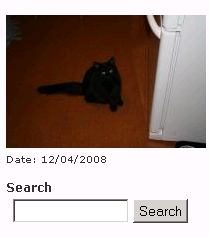
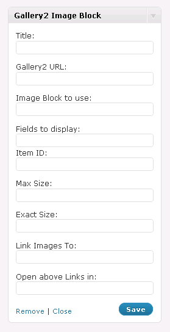

Random Image Block
This plugin will allow you to put one of the meny Gallery2 Image Blocks on your WordPress site. You are required to have a running Gallery2 install to use this plugin.
This is a complete rewrite of Chris Schierer (aka Lentil) Gallery2 Image Block Plugin 0.1.4. This rewrite uses the new WordPress 2.8 Widget API, so is only compatable with wordpress 2.8+.
All options described in the Gallery 2 Image Block documentation are included. User configuration of Image Block options are available in the Widget configuration panel. Blank (empty) options use the Gallery2 defaults.
As of version 0.5, wp-gallery2-image-block has full localization support, and ships with 5 languages besides English. Please contact me if you would like to translate it into more langages, I would love for as meny peaple as posible to be able to use this plugin.
Fully Translated into:
- Dutch (0.5.1)
- French
- English
- German
- Italian (0.6.1)
- Polish (0.6.1)
- Portuguese (0.5.1)
- Spanish
Note: This widget was written using wp_http to increase compatibility with more sites (version 0.6).
Download
- Gallery2 Image Block – Version 0.6.3
- Gallery2 Image Block – Version 0.6.2
- Gallery2 Image Block – Version 0.6.1
- Gallery2 Image Block – Version 0.6
- Gallery2 Image Block – Version 0.5.2
- Gallery2 Image Block – Version 0.5.1
- Gallery2 Image Block – Version 0.5
- Gallery2 Image Block – Version 0.4
- Gallery2 Image Block – Version 0.3
- Gallery2 Image Block – Version 0.1
You can also clone the project with Git by running:
$ git clone git://github.com/mattrude/random-image-blockIf your using git, make sure to hit the Random Image Block's github page.
Screen Shots
 
Dependencies
WordPress 2.8+
Installing
Extract the zip file and copy the folder "random-image-block" into the "wp-content/plugins/" directory in your WordPress installation and then activate the plugin from Plugins -> Installed page.
Frequently Asked Questions
Q: Will this plugin work without Gallery2?
- Sorry No, Gallery2 is required.
Q: Will I be able to add a random image to a page with this plugin?
- Sorry, this plugin will only work in the wiget sidebar.
Q: Recived "SECURITY VIOLATION The action you attempted is not permitted" error on page load
- make sure the Gallery2 plugin "Image Block" is installed and active on your Gallery2 install. You should be able to see the random image by going to: http://--gallery2url--/main.php?g2_view=imageblock.External Where –gallery2url– is the value you put in the widget’s URL field. You should see the random image with the default options.
Change Log
Version 0.6.3
- Tested with WordPress 2.9 - no code changes
Version 0.6.2
- Tested with WordPress 2.8.6 - no code changes
Version 0.6.1
- Tested with WordPress 2.8.5 - no code changes
- Added Italian Translation
- Added Polish Translation
Version: 0.6
- Switched from using lib_curl() to wp_http
Version: 0.5.2
- Tested with wordpress 2.8.3 & 2.8.4 - no code change
- Corrected URL's
- Updated README
Version: 0.5.1
- Tested with WordPress 2.8.2 - no code changes
- Updated POT file do to typo
- Added Dutch translation
- Added Portuguese translation
Version: 0.5
- Added full localization support
- Added French translation
- Added Spanish translation
Version: 0.4
- Corrcted typo in $gallery_linktarget
Version: 0.3
- Corrected missing Header text tag
Version: 0.1
- Initial Release
- Fixed bug that showed no picture if the category box was left blank.
- Single Category check box now works.
Version 0.2
- Added check box to allow single category.
Version 0.1
- Everythings new!
License
Authors
Matt Rude (m@mattrude.com)